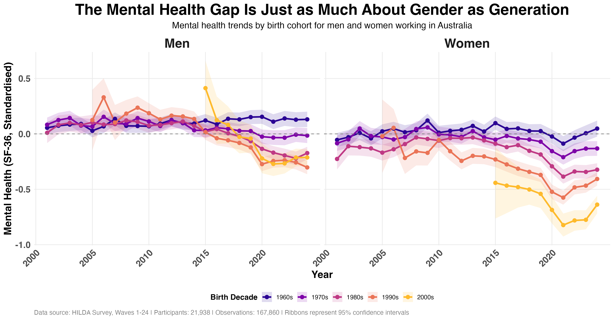

Over the past few weeks, I've been really interested in the growing mental health gap in the Australian workforce. Workers born in more recent decades are reporting significantly worse mental health than workers born in earlier decades, and this gap has been growing over the past 10 years.
But in looking at this further, it's not just a gap between birth cohorts. The gap also depends on gender.
The graph below shows mental health over time for workers born in different decades. Men are on the left, women on the right. Both genders show a growing mental health gap between birth cohorts (i.e., the fanning out or separating of the cohort lines in more recent years). But there are some interesting differences:

1) The cohort gap is much larger for women.
For men, even in recent years, there hasn't been much difference between those born in the 1980s, 1990s, and 2000s. But for women, these differences are substantial. In recent years, there's been more than half a standard deviation difference between women born in the 1960s versus the 2000s.
2) The gap emerged earlier for women.
For men, you don't really see cohort differences until after 2015. For women, the gap appears as early as 2010.
The potential good news is that since COVID, according to these data, women born in the 2000s have seen the biggest improvement in mental health. This group was among the hardest hit in 2020 and 2021, but are rebounding and are almost back to pre-COVID levels.